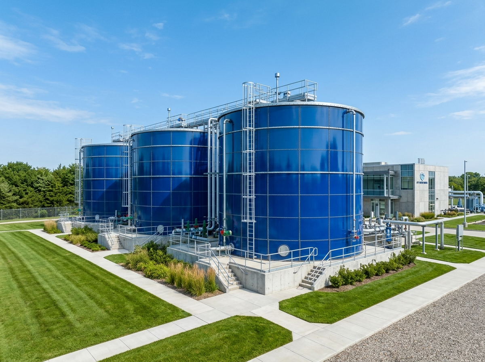
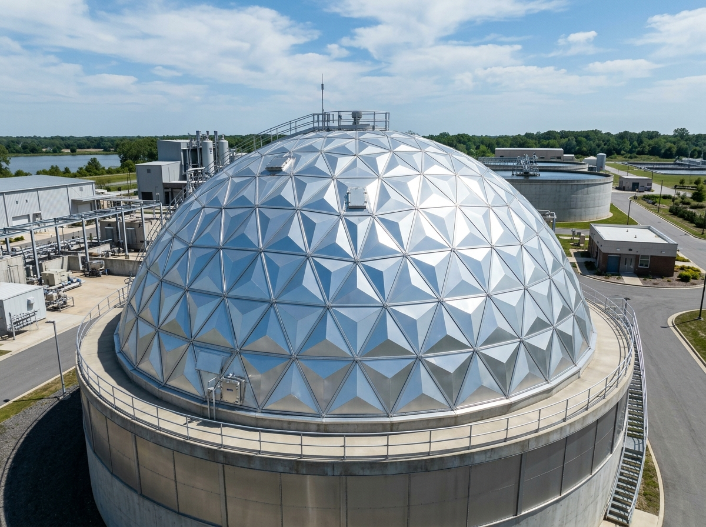
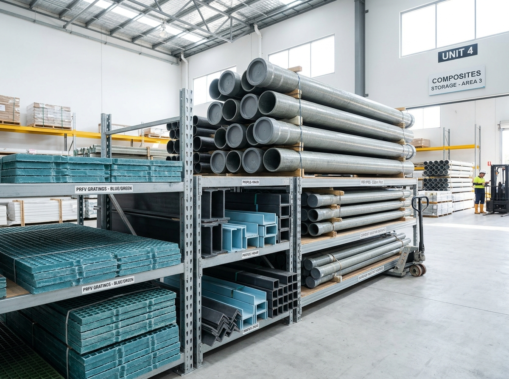
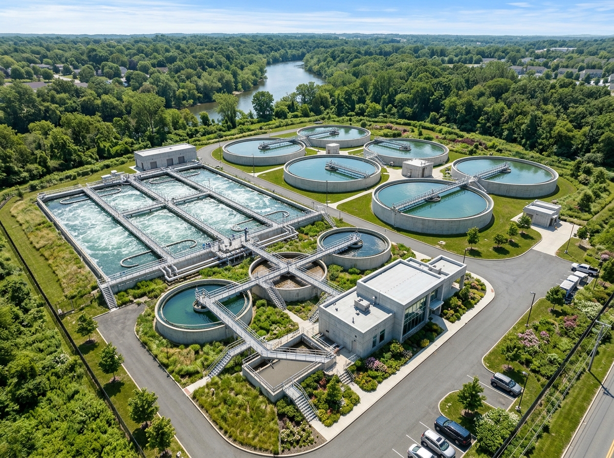
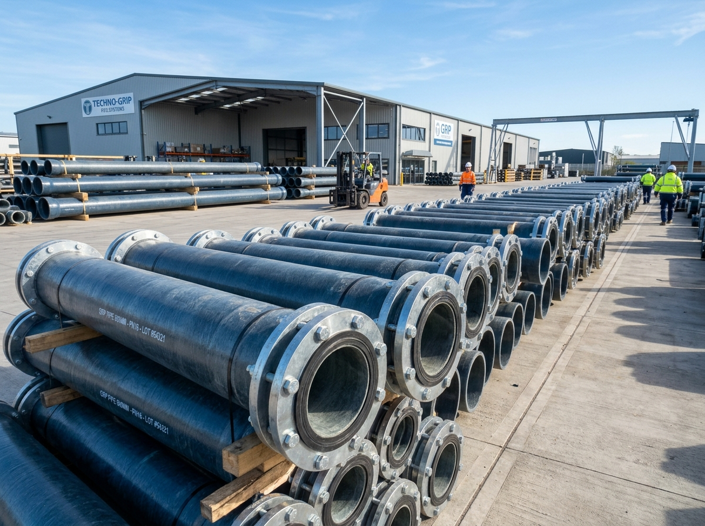
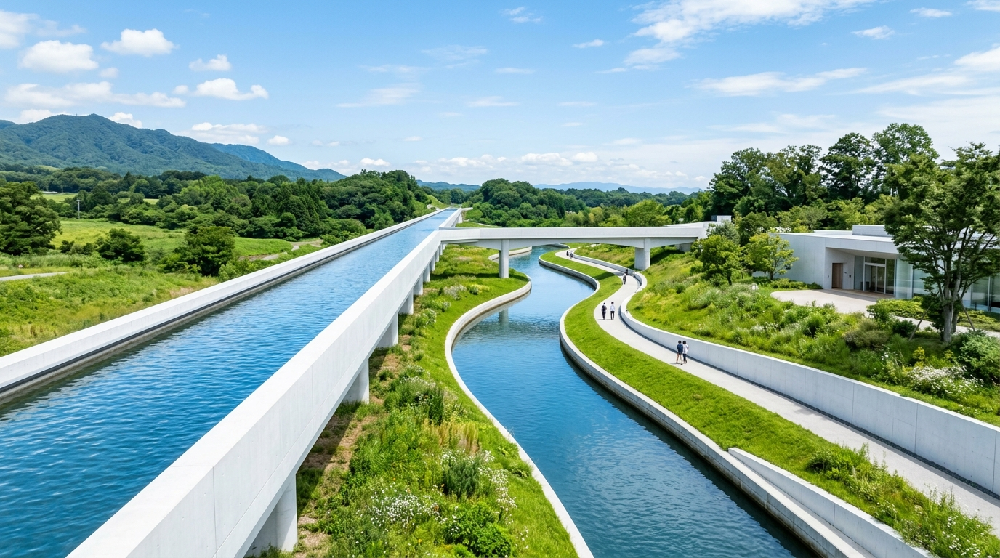

Tanques Vitrificados
Sistemas modulares de almacenamiento en acero fusionado con vidrio, diseñados para ofrecer máxima hermeticidad, rápida instalación y resistencia frente a la corrosión.

Ingeniería Hidráulica · Gestión del Agua · Infraestructura Sostenible
En ICA combinamos consultoría hidráulica, modelación numérica y equipamiento especializado para garantizar sistemas de agua seguros, eficientes y duraderos.
Nuestra Empresa
Somos una empresa que se destaca por su enfoque integral y sostenible, respaldado por conocimientos técnicos en ingeniería. Ofrecemos soluciones de bajo mantenimiento y rentables que cumplen con las normativas internacionales.
Nuestros productos son respetuosos con el medio ambiente, fáciles de ensamblar y duraderos, respaldados por garantías locales e internacionales. Nos enfocamos en la atención meticulosa a los detalles, lo que ha resultado en la satisfacción de los clientes debido a su alta calidad, eficiencia y entrega rápida.
Representamos exclusivamente productos de compañías internacionales con una larga trayectoria y reconocimiento en la industria.
Categorías de Productos

Sistemas modulares de almacenamiento en acero fusionado con vidrio, diseñados para ofrecer máxima hermeticidad, rápida instalación y resistencia frente a la corrosión.

Cubiertas estructurales autoportantes en aluminio diseñadas para proteger reservorios y tanques contra contaminación externa, evaporación y radiación solar.

Componentes fabricados en poliéster reforzado con fibra de vidrio, ideales para ambientes altamente corrosivos por su ligereza y durabilidad estructural.

Soluciones integrales para depuración biológica y físico-química de efluentes municipales e industriales, orientadas al reúso responsable del agua.

Sistemas de conducción y accesorios especiales en plástico reforzado con vidrio, pensados para proyectos hidráulicos exigentes y libre mantenimiento.
Organizaciones públicas, empresas de saneamiento e industrias que respaldan nuestra trayectoria técnica.

Asesoría Especializada
Comuníquese con nuestro equipo de ingeniería para evaluaciones técnicas, fichas y cotizaciones a medida.
Equipamiento Técnico
Estaciones de bombeo, válvulas de control, plantas modulares PTAP y sistemas de telemetría SCADA.
Casos de Éxito
Revise fichas técnicas, caudales de diseño y resultados medidos en infraestructura municipal e industrial.